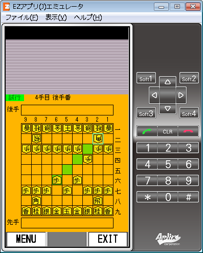
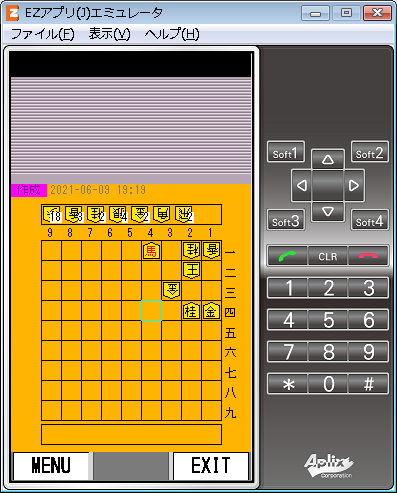
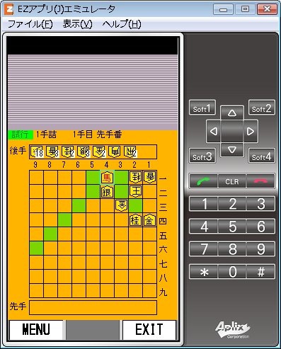

Shgbn-oap
Shgbn-oap v1.5
OpenAppli (MIDP2.0/CLDC1.1)
Download page (for au(KDDI) cell phone)
repository:
https://github.com/neetsdkasu/shgbn-oap
将棋盤に将棋の駒を配置したり移動させたりするだけのアプリ (※ゲームではありません)
screenshots


